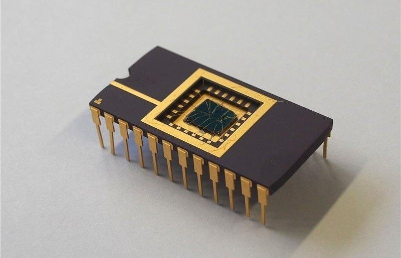

2018-04-01
Design and Implementation of Memristor
প্রবন্ধ-ইংরেজি
What is Memristor?
A memristor is an electrical component that limits or regulates the flow of electrical current in a circuit and remembers the amount of charge that has previously flowed through it.

History of Memristor:
In 1971, Professor Leon Chua first gave his idea on memristor theory as the continuation of his non-linear theory.
He described the relationship between the flux φ, charge q, current i, and voltage v using the basic circuit elements: resistor R, inductor L, and capacitor C. But then based on the symmetry and fact, he proposed that there exists another basic circuit element and called it “memristor: the missing link”.
In 2008, HP Lab discovered the memristor physically.

Fundamental Passive Linear Element (Proposed By Leon Chua):

The analogy of Memristor:
The resistor with memory that Leon Chua described behaves like a pipe whose diameter varies according to the amount and direction of the current passing.

If the current is turned off, The pipe's diameter stays until it is switched on again it "Remembers“ what current has flowed through it.
Working Principle of Memristor:
Memristor switching behavior. (a) “ON” state, low resistance, (b) “OFF” state, high resistance. The key feature of the memristor is it can remember the resistance once the voltage is disconnected. In (a) “doped” and “undoped” regions are related to RON and ROFF, respectively. The dopant consists of mobile charges. In (b), L and w are the thin-film thickness and doped region thickness, respectively.

Memristor Model:
The major presented memristor models are,
- Linear Ion-Drift Model
i. HP Model: HP model, which was published in 2008, explains the physical behavior of the memristor device. It is mainly a nonlinear device which divided by two regions or two variable resistors inside it.
Voltage equation, v(t)={R_ON w(t)/D+R_OFF (1-w(t)/D)}i(t)
Current equation, i(t)=(v(t))/(R_OFF (1-√(1-(2μ_D)/(rD^2 ) φ(t))))
HP model, which was actually a linear model, cannot explain how this device will behave in the boundary. To solve the boundary problem, different window functions have been proposed. The main goal of this paper is to compare different window functions that have been proposed at different times. Such as,
ii. Strukov et al
iii. Benderli
iv. Joglekar
v. Biolek
vi. Prodromakis
vii. Picewise
viii. TEAM
- Nonlinear Ion-Drift Models
- Simmons Tunnel Barrier Model
Window functions of Memristor:
A common approach to model memristive systems is to include empirical window functions to describe edge effects and nonlinearities in the change of the memristance.
The window functions give two things:
- A state variable working interval,
2. The nonlinearity near boundaries forces it to reach zero when the state variable is within the bounds.
Hysteresis curve of the various window function in LTspice:
Hysteresis curve of the Biolek:

Hysteresis curve of the Joglekar:

Hysteresis curve of the Picewise:

Hysteresis curve of the TEAM:

Comparison of Window Function:

Logic Families:
The memristor works for the different logic families. Such as,
i. Material Implication Logic,
ii. Memristor Ratioed Logic (MRL),
iii. Memristor Aided Logic (MAGIC), and
iv. Programmable Logic Memristor Array
In our thesis we only works for Memristor Ratioed Logic.
Memristor Ratioed Logic (MRL):
The MRL family represents the logic levels using voltages and hence it has potential to be compatible with standard CMOS logic. It is inspired by Diode logic and as a result, they both share same properties. i.e. the logic is noninverting and non-restoring.
2 input And gate:

2 input Or gate:

AND and NAND Gate Implementation:


OR and NOR Gate Implementation:


XOR Gate Implementation:


Application of Memristor:

Benefits Of using Memristor:
Would allow for a quicker boot up since information is not lost when the device is turned off. Uses less energy and produces less heat. Eliminates the need to write computer programs that replicate small parts of the brain. Compatible with current CMOS interfaces. Power Consumption. As a non-volatile memory, memristors do not consume power when idle. Creating an Analog Computer that works much faster than Digital ones. Provides greater resiliency and reliability when power is interrupted in data centers. Density allows for more information to be stored.
Future Work:
All the AI circuits and neural networks in the past have been built on digital 1s and 0s, However, memristors, because they act similarly to synapses, might be used to test emulated neurotransmitter functions.
Used for understanding conscious feelings involves pain and pleasure centers in the brain along with neurotransmitters (serotonin, dopamine, melatonin, glycine, etc.)
Biologists know that neurotransmitters play an important role in consciousness and feeling centers because you only need to take a drug like cocaine or LSD (that mimics natural neurotransmitters) to dramatically change the state of consciousness.
- Copyright © 2018, Mydul Islam | All Rights Reserved